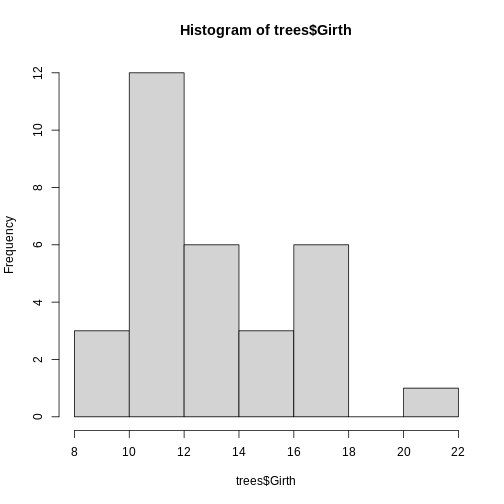
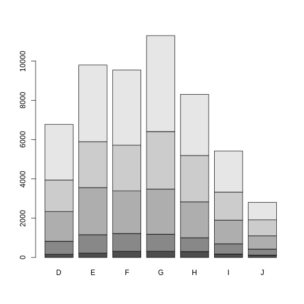
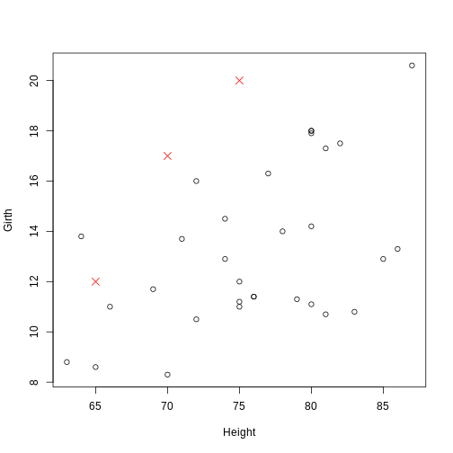
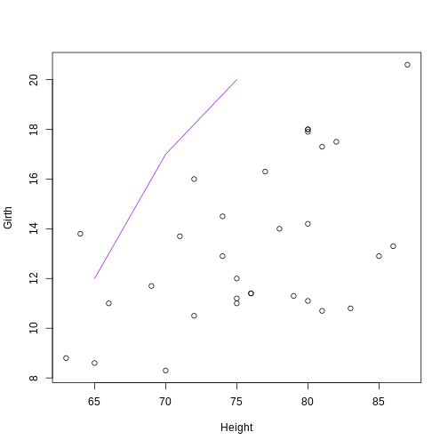
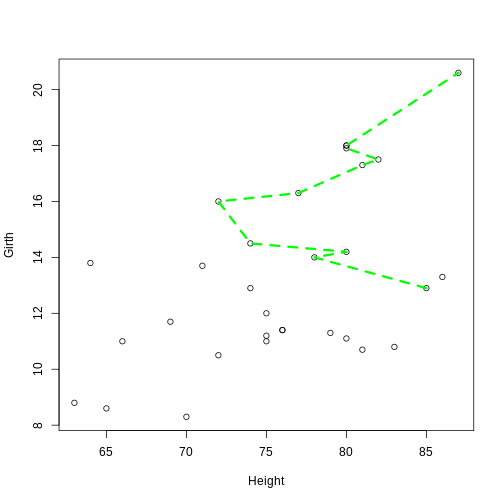

Content from High Level Plot Functions
Last updated on 2024-07-08 | Edit this page
Estimated time: 12 minutes
Overview
Questions
- How do you create and customize basic plots in R using base graphics?
Objectives
- Understand high-level plotting functions.
- Create basic plots like histograms and barplots.
Histogram
A histogram is a plot which groups values from a single numeric variable into intervals, called bins, and displays the frequency (or relative frequency) of values within each bin.
The hist() function creates histograms. The first
argument (generically called x) specifies a numeric vector that
represents the numeric variable we want to visualize. There are various
optional arguments that can be used to control the details of the plot.
We will first consider the hist() function with its default settings
using the pre-existing data set trees within R.
R
hist(trees$Girth)
 With that, we have successfully created our first histogram by simply just specifying the data input. However, there are a few components of the plot to note:
By default, R chooses the number of bins (or, equivalently, the bin width) by splitting the range of the values in x into approximately \(log2(n) + 1\) intervals of equal length, where n is the number of values in x. This is known as Sturges’ rule. This is used as a guideline, but R also attempts to put breaks at round numbers. For example, in this case, the bin width is exactly 2, which produces more bins than Sturges’ rule would produce.
breaks: The number of breaks can be (approximately) specified using the optional breaks argument. There are several ways to use breaks, such as specifying the number of bins as a single value or specifying a different rule for computing the bins (either “Freedman-Diaconis” or “Scott”). By default, breaks is set to breaks = “Sturges”.
freqs: The hist() function by default outputs a frequency histogram, where the height of each bar indicates the frequency (i.e., number) of values within the corresponding bin. By setting the freq argument to FALSE, hist() will output a relative frequency histogram, where the area of each bar indicates the relative frequency (i.e., proportion) of values within the corresponding bin.
There are more optional arguments that control how the histogram is visualized and/or constructed. If you are interested in learning more, please refer to the histogram documentations.
In addition, there are components that are not specific to histograms (or the hist() function) but are components that are common to most statistical plots. The arguments to change these components are the same for nearly every high level plotting function in base graphics. The most commonly used arguments are given below.
- xlim: The limits (or range) of the x-axis shown on the plot are set by default to span the range of the bins that contain all the values in x.
- ylim: The limits (or range) of the y-axis shown on the plot are set by default to range from 0 to the height of the highest bar(s) in the histogram.
- xlab: The label on the x-axis (set by default to the name of the input vector).
- ylab: The label on the y-axis
- main: The title of the histogram
- col: The color of the bars in the histogram
Challenge 1: Can you do it?
Generate a histogram with trees$Girth and modify several
arguments to customize the plot as follows:
- Set the number of breaks (bins) to 10
- Display relative frequencies instead of counts
- Set the x-axis limits to range from 5 to 25
- Use “blue” and “goldenrod” as the colors for the bars
- Label the x-axis as “Girth of Black Cherry Trees”
- Set the title of the histogram to “Histogram of Girth of Black Cherry Trees”.
R
hist(
trees$Girth,
breaks = 10,
freq = FALSE,
xlim = c(5, 25),
col = c("blue", "goldenrod"),
xlab = "Girth of Black Cherry Trees",
main = "Histogram of Girth\nof Black Cherry Trees"
)
Barplots
The most common statistical plot for visualizing categorical data is the bar plot (or bar chart or bar graph), which shows a bar for each observed category. The height of the bar is proportional to the frequency of that category.
The barplot() function creates bar plots. The first argument, called height, specifies the heights of the bars in the bar plot, which correspond to the frequencies (or relative frequencies) for the categorical variable(s) we want to visualize. The height argument can be a numeric vector or matrix. The type of bar plot that barplot() outputs depends on the class of the height object.
Vector Inputs
If the height argument is a numeric vector, the barplot() function
will return a (simple) bar plot. We can demonstrate it again using the
built-in data set mtcars，which contains various
characteristics of 32 different car models. The am variable
represents the type of transmission in the cars.
R
# Summarize the 'am' variable
transmission_freqs <- table(mtcars$am)
barplot(transmission_freqs,
main = "Bar Plot of Transmission Types",
xlab = "Transmission (0 = Automatic, 1 = Manual)",
ylab = "Frequency",
col = c("lightblue", "lightgreen"))
Matrix Inputs
If the height argument is a numeric matrix, the barplot() function will return a stacked (or segmented) bar plot. The matrix input typically represents a two-way (contingency) table for two categorical variables. Each bar of the plot corresponds to a column of height, and the values in the column correspond to the heights of the stacked sub-bars.
R
library(ggplot2) # Load ggplot2 package
data(diamonds) # Load diamonds data
diamonds_table <- with(diamonds, table(cut, color)) # Create two-way table of cut and color
barplot(diamonds_table)

In addition, if we want to create a side-by-side
barplot instead of a stacked barplot, we simply set the optional
argument beside = TRUE.
The differently shaded sub-bars correspond to the levels of the cut
factor. To make the plot more read-able/informative, we can add a legend
by setting the argument legend = TRUE. Notice that the same
arguments that control the shading and color of histogram bars in hist()
also work for barplot(). If you are interested in learning more, please
refer to the barplot
documentations.
Challenge 2: Play around on your own!
Can you modify the previous plot to display the bars side by side instead of stacked? Add a legend and customize the colors and shading of the bars.Ensure that the legend is included and that the plot is properly labeled. Try to play around with optional arguments so that the barplot can be more informative.
R
barplot(diamonds_table,
beside = TRUE,
legend = TRUE,
density = 40,
col = 1:5,
main = "Side-by-Side Distribution of Diamond Cuts by Color",
xlab = "Diamond Color",
ylab = "Frequency")
Notice that histograms and barplots are not the only high-level plot functions in R. There are more functions, like boxplot and scattergraph. Please refer to specific documentations in R regarding those functions.
Content from Low Level Plot Functions
Last updated on 2024-07-08 | Edit this page
Estimated time: 12 minutes
Overview
Questions
- How do you create and customize basic plots in R using base graphics?
Objectives
- Understand low-level plotting functions.
- Be able to customize existing plots with low-level plotting functions.
There are numerous low level plot functions in base graphics that add components to an existing plot.
Caution: Low level plot functions can only be used if there is already a plot open. If you run a low level plot command when there is not a plot already open, R will give you an error.
Points
The points() function is used to add points to an
existing plot. Similar to the basic form of plot(), the
syntax is points(x, y, ...), where x and
y are numeric vectors that correspond to the coordinates of
the points to add. The same optional arguments common to
plot() can be used to specify the color, size, and type of
the points. To demonstrate, we again use the built-in trees
data set:
R
plot(Girth ~ Height, data = trees)
points(c(65, 70, 75), c(12, 17, 20), pch = 4, col = "red", cex = 1.5)

The coordinate pairs can alternatively be specified using a a two-column
matrix or data frame, a list with two components called x
and y, or a formula y ~ x.
R
# Find the observations (trees) with an above average (mean) volume
volume_index <- with(trees, Volume > mean(Volume))
# Plot the tree girths against height
plot(Girth ~ Height, data = trees)
# Add a blue + to the observations with an above average volume
points(Girth ~ Height, data = trees[volume_index, ], pch = "+", col = "blue", cex = 1.5)
Lines
The lines() function is used to add connected line
segments to an existing plot. The syntax is identical to
points(), but the output will connect specified coordinates
by straight line segments.
R
plot(Girth ~ Height, data = trees)
# Self-generated points
coords_mat <- cbind(c(65, 70, 75), c(12, 17, 20))
lines(coords_mat, col = "purple")
Notice: Even though lines() and
points() are separate functions, the functionality of both
are actually the same. The points() function can be used to
add line segments by setting the optional argument
type = "l". The lines() function can be used
to add points by setting the optional argument
type = "p".
Lines constructed in base graphics functions (like plot() or lines()) can be modified using line-specific optional arguments. Commonly used arguments are:
- lty: The lty argument controls the line type. Line types can either be specified as an integer (0 is blank, 1 is solid (default), 2 is dashed, 3 is dotted, 4 is dotdash, 5 is longdash, and 6 is twodash) or as one of the character values “blank”, “solid”, “dashed”, “dotted”, “dotdash”, “longdash”, or “twodash”, where “blank” uses “invisible lines” (i.e., the lines are not drawn).
-
lwd: The lwd argument controls the line width.
Similar to the cex argument for points, the value corresponds to the
amount by which the line width should be scaled relative to the default
of
lwd = 1. Values above 1 will make the line wider, and values below 1 will make the line thinner.
R
plot(Girth ~ Height, data = trees)
lines(Girth ~ Height, data = trees[volume_index, ], col = "green", lty = 2, lwd = 3)
Notice:The lines() function can also be
used to add a smooth density curve over a relative frequency histogram
(prob = TRUE). The density() function computes a kernel
density estimate of the data, which can be visualized as a smooth curve
superimposed over a histogram using the lines()
function.
R
hist(trees$Girth, prob = TRUE, main = "Histogram of Tree Girth with Density Curve", xlab = "Girth")
lines(density(trees$Girth), lwd = 2, col = "blue")
Key Points
- Know how to add points to an existing plot using the points() function
- Know how to add connected line segments to an existing plot using the lines() function
- Understand how to use the lines() function to add points by setting the type argument to “p”
- Learn how to add a smooth density curve over a histogram